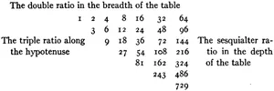
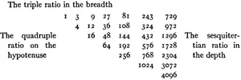
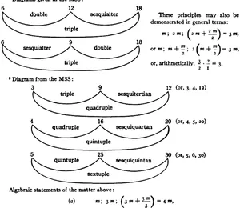
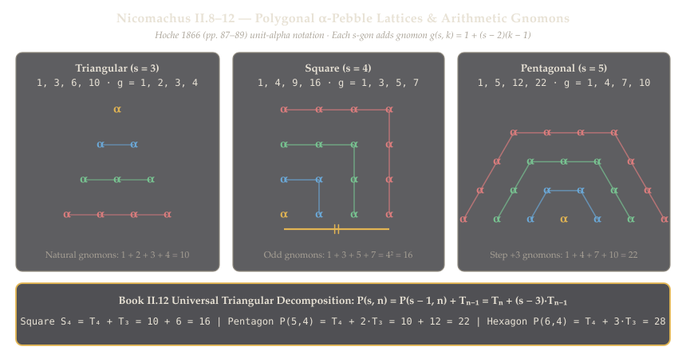
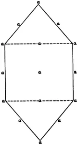
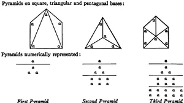
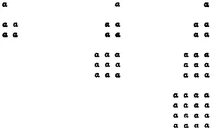
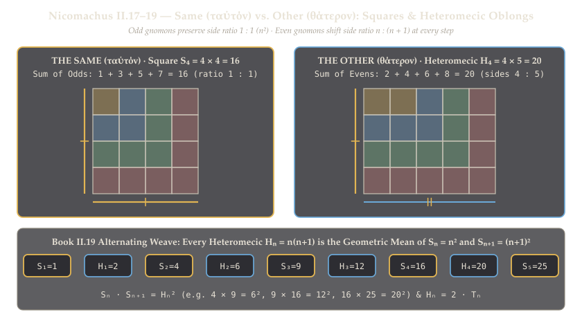
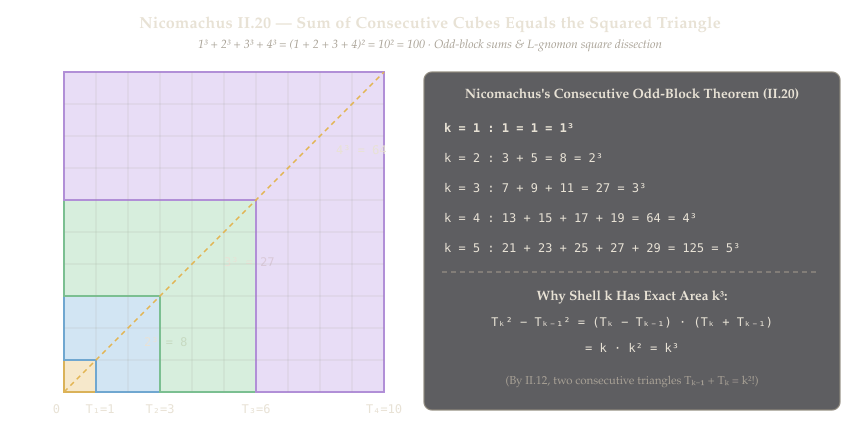
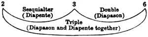

Book II: Reverse Reduction, Polygonal Solids, Proportions & the Ten Musical Means¶
Ἀριθμητικὴ Εἰσαγωγή βʹ — Nicomachus of Gerasa (ed. R. Hoche 1866 & M. L. D’Ooge 1926)
Book II begins by proving that just as all species of inequality unfold from primordial Equality, so conversely all inequalities are resolved and reduced back to Equality by three inverse subtractions—demonstrating that the monad and equality are the elementary root of all reality. Nicomachus then expounds the geometric and figurate dimension of numbers using alpha-graphia pebble notation (psēphoi), building plane polygons, solid pyramids, and cubes via arithmetic gnomons.
In the second half of the book, Nicomachus establishes the comprehensive theory of proportion (analogia), synthesizing the classical Pythagorean and Archytan means into a complete ten-mean system, culminating in the teleiotatē analogia (6 : 8 :: 9 : 12) embodied in the solid geometry of the cube.
Inverse Reduction to Equality & Ratio Generation Diagrams (Chs. 1–5; \(s - 2m + f\))
Figurate & Polygonal Numbers via Arithmetic Gnomons (Chs. 6–12; Triangular, Square, Pentagonal, Hexagonal, Heptagonal)
Solid Pyramidal, Cubic, and Scalene Numbers (Chs. 13–17)
Plato’s *Same* & *Other* and the Square–Oblong Weave (Chs. 18–19)
Nicomachus’s Sum-of-Cubes Theorem from Odd Blocks (Ch. 20; \(\sum_{i=1}^n i^3 = T_n^2\))
The Ten Neo-Pythagorean Means (Chs. 21–28; Arithmetic, Geometric, Harmonic, and the 7 Additional Means)
The Most Perfect Proportion & Philolaus’s Cube (Ch. 29; 6 : 8 :: 9 : 12)
Chapters¶
1. That is called and truly is an element (stoicheion) which is the smallest thing from which anything is put together and the least into which it is resolved. Thus letters are called the elements of written speech, since from them all articulate utterance is constructed and into them at last it is resolved; musical notes are the elements of every melody, from which it begins to be composed and into which it is resolved; and commonly the so-called four elements of the cosmos are simple bodies—fire, water, air, and earth—for natural philosophy holds that the universe is compounded out of these first and is conceived as resolving back into them at last.

1. When three terms are given to you in any relation and proportion whatever—whether multiple, superparticular, superpartient, or a compound of these, multiple superparticular or multiple superpartient—

1. Every multiple stands at the head of as many superparticular ratios named opposite to it as is its own rank from unity, and by no device either more or fewer. Doubles, then, will bring forth sesquialters: the first one, the second two, the third three, the fourth four, the fifth five, the sixth six, and neither more nor fewer; rather, by complete necessity, whenever the superparticulars generated attain the commensurate number equal in multitude to the multiples that generated them, then by some marvelous necessity the number terminating them all is found by nature incapable of admitting that fractional part by which the superparticulars were advancing. From the triples all the sesquitertians will advance in the same way, equal in multitude to their generators and ending, once their progression is complete, at numbers admitting no third part; and likewise the sesquiquartans from the quadruples find their summit in a number admitting no fourth part after their due progression.

1. We ought to draw a like illustration for the triple:

1. It remains for us, having made clear what other ratios the compositions of ratios yield, to move on to the succeeding parts of this introduction. Now the first two ratios of the superparticular, taken together into one, generate the first ratio of the multiple, namely the double; for every double will be a combination of a sesquialter and a sesquitertian, and every sesquialter and sesquitertian combined will always yield a single double. For example, since \(3\) is sesquialter of \(2\) and \(4\) is sesquitertian of \(3\), \(4\) will be double of \(2\), compounded of a sesquialter and a sesquitertian. Conversely, since \(6\) is double of \(3\), we shall find placed between them some number that necessarily preserves the sesquitertian ratio toward one of them and the sesquialter toward the other; thus \(4\), lying between \(6\) and \(3\), gives the sesquitertian ratio to \(3\) and the sesquialter to \(6\). Rightly, then, was it said that a double, when resolved, resolves into a sesquialter and a sesquitertian, and that when only a sesquialter and a sesquitertian are combined, a double is always formed.
1. Thus far we have spoken sufficiently concerning relative quantity, selecting what is fitting and readily grasped by beginners. What remains on that subject will be filled in once we have paused to set forth earlier matters that belong to absolute quantity and have prior claim—for mathematical theorems ever illuminate one another. What we must first examine concerns linear, plane, and solid numbers—cubic and spherical, equilateral and scalene, bricks, beams, wedges, and the like—which properly belong to geometry as concerning magnitude, yet are taken up seminally into arithmetic as their mother and elder; for we remember how arithmetic
1. Thus the point is principle of interval, not interval; principle of line, not line; and line is principle of surface, not surface—principle of the two-dimensional, not two-dimensional. Naturally too, surface is principle of body, not body; principle of the three-dimensional, not three-dimensional. 2. In numbers likewise, the monad is principle of every number advancing by unity along one dimension; the linear number is principle of the plane number broadening out along a second dimension; and the plane number is principle of the solid number acquiring depth as a third dimension. By subdivision, linear numbers are simply all those beginning from \(2\) and advancing by addition of unity in one and the same

1. A triangular number is one which, resolved into units, displays in the plane arrangement of its parts an equilateral triangle—such as \(3, 6, 10, 15, 21, 28\), and those that follow. Their figures will be orderly, at once triangular and equilateral; and advancing as far as you please, you will find each triangular, setting first of all as most elementary that formed from unity, so that unity appears as the potential triangle, while \(3\) is the first actual triangle.
1. A pentagonal number is one which, likewise when expanded into units, takes plane shape as a pentagonal figure equal on all sides—such as \(1, 5, 12, 22, 35, 51, 70\), and those in the same proportion. 2. Now of the first actual pentagon, \(5\), each side is \(2\)—for \(1\) is the side of the very first potential pentagon, unity; of the second set forth, \(12\), the side is \(3\); of the next, \(22\), it is \(4\); of the following, \(35\), it is \(5\); of \(51\) after it, \(6\); and so onward. Universally, the side has as many units as the numbers chosen from the natural row and heaped together to form it. For similarly, numbers from unity skipping two at a time—those exceeding one another by \(3\)—are piled together to generate the pentagon:

1. The hexagonal, heptagonal, and succeeding numbers will be set forth in their series by following the same process, if from the natural series of number there be set forth series with their differences increasing by 1. For as the triangular number was produced by admitting into the summation the terms that differ by 1 and do not pass over any in the series; as the square was made by adding the terms that differ by 2 and are one place apart, and the pentagon similarly by adding terms with a difference of 3 and two places apart (and we have demonstrated these, by setting forth examples both of them and of the polygonal numbers made from them), so likewise the hexagons will have as their gnomons (root-numbers) those which differ by 4 and are three places apart in the series, which added together in succession will produce the hexagons. For example, 1, 5, 9, 13, 17, 21, and so on; so that the hexagonal numbers produced will be 1, 6, 15, 28, 45, 66, and so on, as far as one wishes to go.
1. Concerning the nature of plane polygonals this is sufficient for a first Introduction. That, however, the doctrine of these numbers is to the highest degree in accord with their geometrical representation, and not out of harmony with it, would be evident, not only from the graphic representation in each case, but also from the following:

1. From here it is already easy to perceive what a solid number is and how such a number advances with equal sides. For any number that, beyond the two dimensions observed in plane diagramming—length and breadth—has taken on a third dimension, which some call depth, others thickness, and still others height, is a solid number, extended in three directions and possessing length, depth, and breadth within itself.

1. Next come the pyramids that rise in uniform figure from a square base toward one and the same summit. These are shaped in the exact same manner as the triangular pyramids already described. Setting out the regular squares from unity in a row—1, 4, 9, 16, 25, 36, 49, 64, 81, 100, and those following—I stack them in heaps one atop another in depth: placing 1 on top of 4, I obtain 5, the first pyramid in actuality from a square base, since here too unity is first in potentiality. Again, I set this very pyramid of five units, just as it stands, entire upon the square 9, and there is formed for me the pyramid 14 on a square base, having 3 as its side on every edge, whereas the preceding one, 5, had side 2, and the primal one in potentiality had side 1;
1. Such is the generation, progression, growth, and nature of the equilateral pyramidal solids, having for their seed and root the polygonal numbers themselves and their orderly stacking. Yet there exists another orderly family of solids of a different kind—those named cubes, beams, bricks, wedges, spherical numbers, and parallelepipeds—whose order of progression runs as follows.
1. Since the cube is a solid figure equal-sided throughout—in length, depth, and breadth—and equally dimensioned across the so-called six orientations, it follows directly that opposed to it stands the solid whose dimensions are nowhere equal to one another, having depth unequal to breadth, and length unequal to both of them, such as twice three times four, or twice four times eight, or thrice five times twelve, or arranged by some other inequality of this sort.
1. Beginning afresh, a number is called heteromecic when, laid out as a plane diagram, its drawing is four-sided and right-angled, yet its sides are not equal to one another nor is its length equal to its breadth, but they differ by unity—such as 2, 6, 12, 20, 30, 42, and those following. For whoever sketches them in a plane will invariably construct them thus: once 2 is 2, twice 3 is 6, thrice 4 is 12, and the rest proportionally—four times 5, five times 6, six times 7, seven times 8, and onward without end—requiring only that one side exceed the remaining side by unity and by no other number.

1. Concerning solid numbers let this much suffice for the present. Now both natural philosophers and those taking their start from mathematics declare the Same and the Other to be the principles of all things; and we have proved that the Same is unity together with the odd numbers shaped by it—and far more still the squares built from their cumulative sum, inasmuch as they share in equality along their sides—while the Other is the dyad and every even number shaped by it, and above all the heteromecic numbers formed from their cumulative sum, because they share in primary inequality and otherness through the difference of their sides. We must therefore next demonstrate as an absolute necessity how in both of these, as in root principles and seeds, all the properties of number—its species, subdivisions, all its relations, polygonal figures, and the like—lie pre-contained in potentiality.
1. That we may also be vividly persuaded of what has been stated—that existing things were framed out of warring and contrary elements and rightly received harmony (for harmony always arises from opposites, being a union of diverse elements and a concord of disagreeing minds)—let us set out in two parallel horizontal rows no longer the even numbers from 2 and the odd numbers from 1 by themselves, as just now, but the figures formed by summing those very numbers: squares from the odd numbers, and heteromecics from the even. As we study their display, we shall marvel at their mutual friendliness and joint cooperation in bringing forth and completing all other things, so that we may justly conclude that in the nature of the whole cosmos as well, something of this sort is brought to pass by cosmic providence.

1. Furthermore, every square becomes a heteromecic when its own side is added to it—or, by Zeus, when its own side is subtracted from it. Thus the Other is conceived both in excess and in deficiency relative to the Same, seeing that it is produced by addition and subtraction, just as the two species of the unequal—the greater and the lesser—derive their generation from addition or subtraction applied to the equal.
1. After this it would be the proper time to incorporate the nature of proportions, a thing most essential for speculation about the nature of the universe and for the propositions of music, astronomy, and geometry, and not least for the study of the works of the ancients, and thus to bring the Introduction to Arithmetic to the end that is at once suitable and fitting.
1. The first three proportions, then, which are acknowledged by all the ancients, Pythagoras, Plato, and Aristotle, are the arithmetic, geometric, and harmonic; and there are three others subcontrary to
1. It is an arithmetic proportion, then, whenever three or more terms are set forth in succession, or are so conceived, and the same quantitative difference is found to exist between the successive numbers, but not the same ratio among the terms, one to another. For example, \(1, 2, 3, 4, 5, 6, 7, 8, 9, 10, 11, 12, 13\); for in this natural series of numbers, examined consecutively and without any omissions, every term whatsoever is discovered to be placed between two and to preserve the arithmetic proportion to them. For its differences as compared with those ranged on either side of it are equal; the same ratio, however, is not preserved among them.
1. Next after the arithmetic stands the continuous geometric mean, which alone is strictly called proportion because the terms within it are seen to stand to one another in the very same ratio. It arises whenever, among three or more terms, as the greatest stands to the term next below it, so that term stands to the one beneath it—and if there be still more terms, that one likewise to the next beneath—so that they differ from one another not by the same quantity, but by the same quality of ratio, contrary to what we observed in the arithmetic proportion.
1. The mean ranked third in order is called the harmonic. It occurs among three terms when the middle term stands toward the extremes neither in the same ratio—being consequent to the one and antecedent to the other, as in the geometric—nor with equal intervals and differing ratios, as in the arithmetic. Rather, it occurs when, as the greatest term stands to the least, so stands the difference between the greatest and the middle term to the difference between the middle term and the least—for example, \(3, 4, 6\), or again \(2, 3, 6\).

1. We already recognized, in our earlier division of what exists, that relation belongs peculiarly to harmonic theory; yet the musical ratios of the concords in harmony are likewise discovered preeminently in this very mean. Most elementary among these is the fourth (diatessaron), in the superparticular ratio of \(4 : 3\), appearing as term to term in the double-extreme example, or as difference to difference in the triple-extreme example—these being the differences of \(6\) with \(2\) and again of \(6\) with \(3\).
1. Just as on the divided musical canon—when a single stretched string or a flute of fixed length is laid out with immovable ends, while the intermediate position is shifted on the flute by finger-holes or on the string by a movable bridge—each of the three means just described, arithmetic, geometric, and harmonic, can be produced one after another, so that they are fittingly and most truly named from this shifting and transfer of the middle term: so too between any two numerical terms, whether both be odd or both be even, it is both reasonable and possible, while those extremes remain fixed and unshifted, to insert a mean conforming to each of the three proportions—exceeding and exceeded by an equal amount in the arithmetic, set apart by a like ratio in the geometric, and greater and less by the very same fractional part of the extremes themselves in the harmonic.
1. So much, then, concerning the three proportions celebrated among the ancients, which I have deliberately set forth more clearly and more fully because we meet them frequently and in varied guises throughout our readings. Those that follow must be treated more concisely, since they are not commonly found in the ancient writers, yet are taken up for our own practice and to round out, as it were, the completeness of our reasoning. 2. I shall present these in order according to their contrariety to the three archetypal means already expounded, since they are fashioned out of those very three and obtain a corresponding sequence.

1. It remains for me to explain briefly the most perfect proportion, three-dimensional and embracing all the others, since it is most useful for every advance in music and natural philosophy. For this alone among the rest could properly and truly be called harmony, since it is not planar nor bound together by a single mean alone, but by two, so as to extend in three dimensions—just as the cube was lately explained to be harmony.